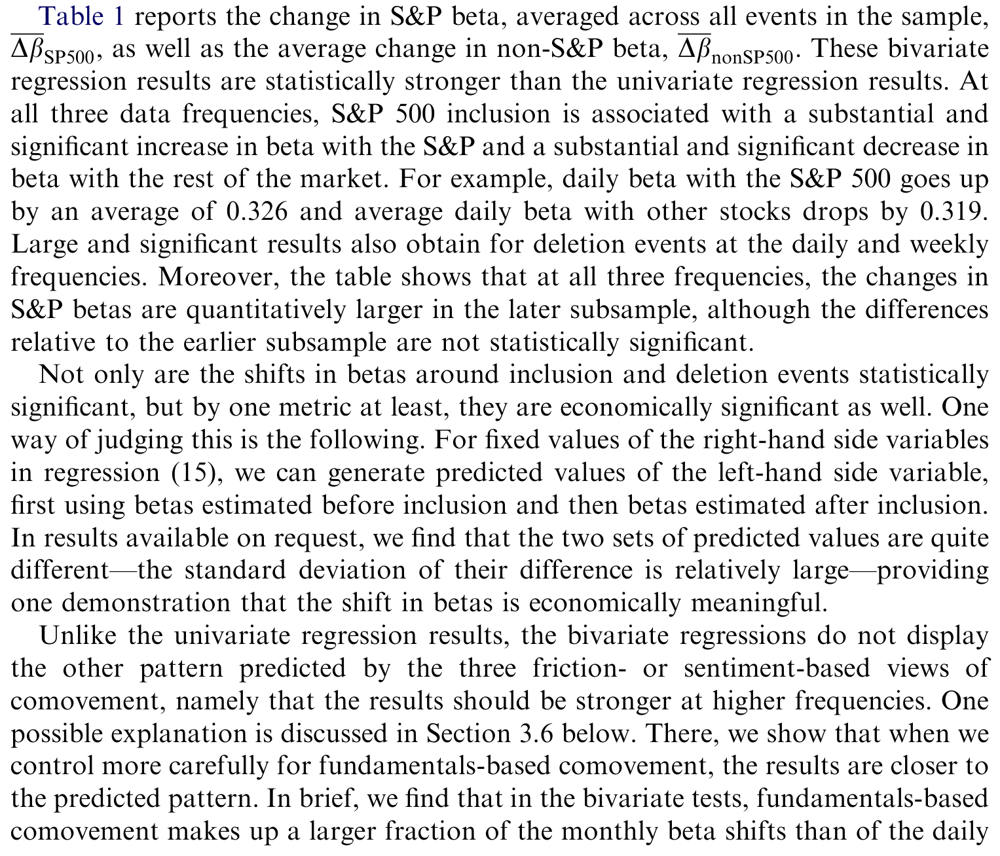
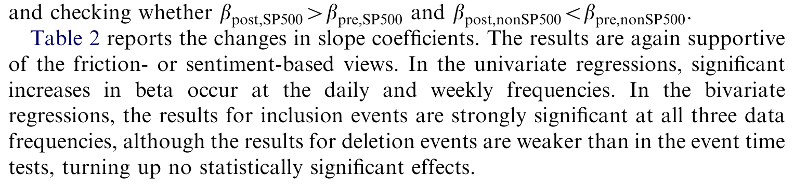
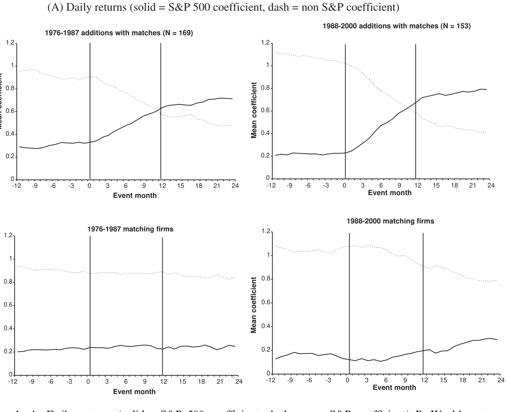
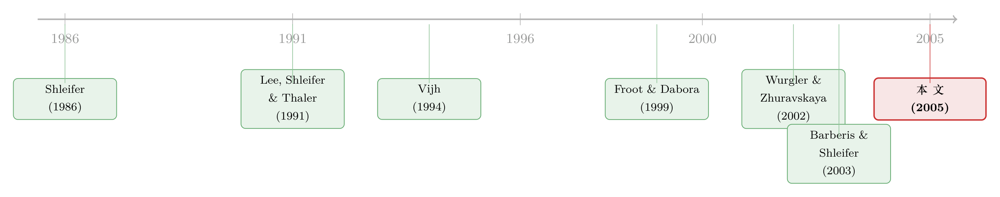

被「打包」进同一个篮子的股票，就开始一起呼吸了
本文读的是 Barberis, Shleifer & Wurgler (2005, JFE)：当一只股票被纳入标普 500，它和指数其它成分股的「一起涨跌」会显著增强——日频上 S&P beta 平均跳升 0.326，同时它和指数外股票的 beta 下滑 0.319，而它的基本面并没有变。换句话说，协动性 (comovement) 可以脱离基本面，由摩擦或情绪「制造」出来。
1 一个被默认的前提，其实从没被检验过
资产定价里有一个用得最多、却最少被追问的词：协动性。小盘股一起动、价值股一起动、同一行业的股票一起动、同评级同期限的债券一起动——我们早就习惯了把这些「共同因子」拿来解释收益率的横截面。可是，这些共同因子最初是怎么冒出来的？ 为什么某些资产偏偏抱成一团，另一些却各走各的路？什么东西决定了一只股票在某个因子上的 beta？
这篇论文的全部张力，就藏在这个被绝大多数人跳过去的问题里。
传统答案听起来天经地义：在一个没有摩擦、投资者理性的经济里，价格等于基本面价值——也就是理性预测的现金流按风险贴现的结果。既然价格就是基本面，那么价格的协动，就只能来自基本面的协动。两只股票一起涨跌，是因为它们的现金流一起波动。这就是基本面观点 (fundamentals-based view)。
接着，一个自然的问题是：如果世界上存在摩擦，存在非理性的投资者，并且套利是有限的呢？那么价格就会偏离基本面，协动也就可能和基本面脱钩。这就是作者要立起来的对立假说——摩擦/情绪观点 (friction- or sentiment-based view)。
问题在于：这两个假说在大多数场景里是观测等价的。你看到两只股票一起涨，到底是因为它们的现金流相关，还是因为有人把它们当成一类一起买卖？光看相关性，永远分不清。
2 为什么标普 500 纳入是一台「天然的分离器」
要把两个假说掰开，需要一个非常苛刻的实验：一组股票，它的「成员身份」会清晰地、可识别地变动，而这个变动不携带任何关于现金流相关性的信息。
标普 500 的纳入与剔除，几乎是为这个实验量身定做的。
- 它是一个天然的类别和栖息地 (habitat)：挂钩标普的共同基金、期货、期权多到惊人，无数投资者只在这个篮子里做配置。
- 它的成员频繁、清晰地换血：典型的一年大约 30 次变动。
- 最关键的——标普官方反复强调，选股的唯一目标是让指数尽可能代表美国经济，而不是对某只股票的未来现金流表态。
第三点是整个识别策略的命门。如果纳入不改变投资者对「这只股票的基本面与其它股票基本面之间相关性」的判断，那么在基本面观点下，纳入就不应该改变它和别的股票的收益相关性——beta 不该动，\(R^2\) 不该动。这是一个干净的零假设。
剔除则要小心：股票通常因为被并购、被收购、或濒临破产才被踢出指数，这些情形下现金流特征本身在变。所以作者把这类「脏」的剔除事件全部排除，只留下因「指数在某行业权重过高」而被动剔除的样本。
于是预测变得非常尖锐。摩擦/情绪观点说：纳入后，这只股票被卷进一个被大量资金进进出出的类别（栖息地），如果套利有限，它和篮子里其它股票的相关性必然上升；剔除则方向相反；而且——越是近年，标普作为类别和栖息地越重要，效应应该越强。基本面观点则斩钉截铁：什么都不该变。
（关于「指数成员身份本身就是一套交易规则、而非基本面信号」这一思路，可参见《你以为买的是「整个市场」，其实买的是一套交易规则》；而「栖息地」这个概念在散户层面的另一种体现，见《散户的栖息地：他们不是更笨，只是去了别人不愿去的地方》。）
3 模型：三种「脱钩」机制的同一副骨架
这篇论文的可贵之处，是它没有只讲一个故事，而是把三种摩擦/情绪机制写进同一个简约模型，再证明它们给出同样的可检验预测。
经济里有一个零收益的无风险资产，外加 2n 个风险资产。资产 i 是对一个最终清算股利 \(D_{i,T}\) 的索取权，这个股利随时间一点点被新息累加出来：
$$ D_{i,T} = D_{i,0} + e_{i,1} + \cdots + e_{i,T} $$
其中每期的现金流新息向量服从一个固定协方差结构、且时间上独立同分布：
$$ e_t = (e_{1,t}, \dots, e_{2n,t})' \sim N(0, S_D), \quad \text{i.i.d. over time} $$
资产的「收益」就定义为价格变化 \(\Delta P_{i,t} = P_{i,t} - P_{i,t-1}\)。注意：到此为止，所有的协动性都只能来自 \(S_D\)，即现金流新息之间的相关——这正是基本面观点的世界。
3.1 类别观点与栖息地观点：同一组方程
现在把 2n 个资产分成两类 X 和 Y（不妨想成「旧经济」和「新经济」股票）。假设有一批噪声交易者按类别配置资金，他们的情绪在两类之间来回切换。于是 X 类资产的收益变成：
对应地，Y 类是 \(\Delta P_{j,t} = e_{j,t} + \Delta u_{Y,t},\ j \in Y\)。两类的情绪冲击服从：
$$ \begin{pmatrix} u_{X,t} \\ u_{Y,t} \end{pmatrix} \sim N\!\left( \begin{pmatrix} 0 \\ 0 \end{pmatrix}, \; \sigma_u^2 \begin{pmatrix} 1 & \rho_u \\ \rho_u & 1 \end{pmatrix} \right), \quad \text{i.i.d. over time} $$
关键的直觉在 \(\Delta u_{X,t}\) 这一项：因为噪声交易者按类别调仓，这个情绪冲击对 X 内所有股票都是共同的。于是即便两只股票的现金流 \(e\) 毫不相关，只要它们同属 X，就会因为共享 \(\Delta u_{X,t}\) 而一起涨跌——协动凭空被制造出来了。
妙处在于，这同一组方程也是栖息地观点的简约模型：只要把 X、Y 重新解释为「栖息地」而非「类别」——比如 X 是美国股票、Y 是英国股票，很多投资者只交易本国证券。此时 \(u_{X,t}\) 不再是情绪，而是这群「只买 X」的投资者的风险厌恶、流动性需求的变化。机制不同，数学一模一样。
3.2 信息扩散观点：换一套方程，同样的预测
第三种机制——信息扩散 (information diffusion)——讲的是另一个故事：由于某种摩擦，信息进入某些股票价格的速度比别的股票快。建模为：
$$ \Delta P_{i,t} = e_{i,t}, \quad i \in X $$ $$ \Delta P_{j,t} = m\, e_{j,t} + (1-m)\, e_{j,t-1}, \quad j \in Y $$
X 类股票当期就把 t 时刻的新息吸收完毕；Y 类只吸收一部分 m，剩下的 1-m 拖到下一期。当某只股票从「吸收慢的 Y」搬到「吸收快的 X」，它就会和其它 X 股票同步反映市场级新息，于是协动上升。
无论现金流新息、情绪冲击要影响价格，还是信息要带延迟地进入价格，前提都是套利有限（De Long et al., 1990；Shleifer & Vishny, 1997）——否则套利者会立刻把这些偏离抹平。
3.3 两条预测：单变量与双变量
作者在附录里证明，无论 X、Y 是类别、栖息地还是信息速度组，上面的简约模型都给出同样的命题。
预测 1（单变量）：把资产 j 从 Y 重新归入 X 后，在回归
$$ \Delta P_{j,t} = a_j + b_j\, \Delta P_{X,t} + v_{j,t}, \qquad \Delta P_{X,t} = \frac{1}{n}\sum_{l \in X} \Delta P_{l,t} $$
中，斜率 \(b_j\) 与回归的 \(R^2\) 都会上升。这正是 Vijh (1994) 当年做的那类检验。
预测 2（双变量）——这才是本文真正关键的一步。在回归
$$ \Delta P_{j,t} = a_j + b_{j,X}\, \Delta P_{X,t} + b_{j,Y}\, \Delta P_{Y,t} + v_{j,t} $$
中，重新归类后 \(b_{j,X}\) 上升、\(b_{j,Y}\) 下降。而且模型给出一组极其干净的极限值：归类前 \(b_{j,X}=0,\ b_{j,Y}=1\)；归类后 \(0
为什么要加一个 \(\Delta P_{Y,t}\)？因为单变量回归里的 \(\Delta P_{X,t}\) 不是情绪冲击的干净度量——它有一大块变动来自现金流新息。把指数外股票的收益 \(\Delta P_{Y,t}\) 放进来当控制项，等于把「市场级现金流新息」吸走，剩下的 \(b_{j,X}\) 就成了「对类别情绪 \(\Delta u_{X,t}\) 的敏感度」的更纯净测量。这就是为什么双变量检验的功率，会远高于单变量。
而基本面观点在这套框架里给出的，是一个干净的零：如果不存在按类别配置的噪声交易者、不存在独立的栖息地、信息扩散速度也一致，那么 \(\Delta P_{i,t}=e_{i,t}\)，协动完全由 \(S_D\) 决定，纳入前后 beta 与 \(R^2\) 纹丝不动。
4 数据与结果：效应不仅存在，而且越来越大
数据。 研究 1976 年 9 月 22 日至 2000 年 12 月 31 日的纳入事件，1979 年 1 月 1 日至 2000 年 12 月 31 日的剔除事件（标普在 1976 年 9 月前不记录变动公告日，1979 年前的剔除数据无法获得）。样本期内有 590 次纳入、565 次剔除；剔除掉分拆、重组、并购、以及样本末端数据不足的事件后，最终日频与周频样本为 455 次纳入、76 次剔除，月频为 324 次纳入、45 次剔除。
第一个发现：单变量效应被时间放大了。 把 Vijh 的方法用到更长的样本上，效应比当年大得多。1976–1987 年纳入的股票，日频 S&P beta 平均上升 0.067；而 1988–2000 年这个数字飙到 0.214。考虑到标普 500 作为类别和栖息地的重要性在这二十多年里急剧上升，效应不仅在、而且在近年更大——这恰恰是摩擦/情绪观点最想看到的纹理，基本面观点对此无话可说。

Table 1: reports the change in S&P beta, averaged across all events in the sample
第二个、也是核心的发现：双变量检验给出更强的证据。 在日频、周频、乃至月频上，纳入后 S&P beta 大幅上升、非 S&P beta 大幅下降。以日频、全样本 1976–2000 为例：S&P beta 平均上升 0.326，非 S&P beta 平均下降 0.319——两者几乎对称，与预测 2 中「一升一降幅度相等」的理论刻画严丝合缝。剔除事件则给出方向相反、同样显著的结果，且效应在近年量级更大。

Table 2: reports the changes in slope coefficients. The results are again supportive
如果把双变量斜率画成「事件时间」的轨迹（如图 1），可以肉眼看到：在纳入日附近，S&P 系数（实线）拾级而上，非 S&P 系数（虚线）同步走低，像两条被纳入事件掰开的剪刀。

Figure 1: A. Daily returns (solid¼S&P 500 coefficient, dash¼non S&P coefficient) B. Weekly returns
稳健性。 作者从多个角度排除了替代解释：用「日历时间」而非「事件时间」重做，结论不变；证明结果不能归因于稀薄交易 (thin trading)；最关键的是做了一个匹配样本——挑选在若干特征上与事件股相似、但没有进指数的股票，发现事件股的 beta 变动远大于匹配股。这一步堵死了一类基本面解释：即便纳入碰巧伴随着「股票基本面相关性发生改变」（而非纳入导致改变），匹配样本也该捕捉到同样的变化——可它没有。
机制分解。 三种机制都与证据一致，但作者还想知道各自占多大份额。信息扩散有一个独门特征：它预测 S&P 与非 S&P 收益之间存在非零的交叉自相关（市场级新息今天进 S&P、明天才进非 S&P）。于是在回归里加入领先与滞后项，就能把信息扩散的贡献识别出来。结论是：日频单变量结果里只有一小部分来自信息扩散，而日频双变量结果里有相当大一部分来自它——剩下的残差，更可能是类别与栖息地效应。
5 文献脉络：从「需求曲线向下」到「协动也会被需求拧弯」
要理解这篇论文的位置，得先看它站在谁的肩膀上。

故事的起点是一个更基础的争论：股票的需求曲线到底是不是水平的？ 标准理论说，单只股票有无数近乎完美的替代品，需求曲线应该是平的，非基本面的需求冲击不该影响价格。Shleifer (1986) 和 Harris & Gurel (1986) 用标普 500 纳入做了第一批反驳——纳入带来价格上涨，说明无信息的需求确实会推动价格水平。Wurgler & Zhuravskaya (2002) 进一步指出，正是「缺乏完美替代品」让套利无法压平这条需求曲线。
与此同时，行为金融这一侧在积累另一类证据：价格会系统性地脱离基本面。Lee, Shleifer & Thaler (1991) 发现封闭式基金常常和小盘股一起动，哪怕它持有的是大盘股；Froot & Dabora (1999) 发现 Royal Dutch 和 Shell 这两只索取同一现金流的股票，收益却惊人地脱钩；Fama & French (1995) 则坦言，很难把价值股、小盘股里那么强的共同因子，对应到盈利里的共同因子上。
这两条线在 Barberis & Shleifer (2003) 的风格投资 (style investing) 模型里汇合——这就是本文「类别观点」的理论母体。而本文真正的直接前身，是 Vijh (1994)：他第一个用标普纳入去看股票的市场 beta 在纳入后是否变化，并发现了显著上升。
本文做了两件 Vijh 没做的事：一是用更长的样本揭示效应在放大；二是引入双变量回归，把「需求曲线向下」（关于价格水平）的旧议题，推进到「需求也会拧弯协动结构」（关于二阶矩）的新议题上。它把「有限套利会影响价格水平」升级成了「有限套利会影响相关性」。
6 评论与延伸（Q&A + 研究方向）
(a) 几个可能的疑问
Q：纳入后 beta 上升，会不会只是因为标普官方在「偷偷择股」，挑了基本面更同质的公司？
这正是匹配样本要堵的漏洞。作者选取在多项特征上相似但未进指数的股票作对照，发现事件股的 beta 变动远大于匹配股。如果纳入只是和「基本面相关性改变」相伴随，匹配股该出现同样的变化——但没有。此外 Denis et al. (2003) 发现纳入伴随盈利上升，但没有任何证据说明纳入预示了现金流协方差的改变，而后者才是协动所需的。
Q：会不会是稀薄交易导致的 beta 估计偏差？被纳入后股票流动性变好，beta 自然变化？
作者专门检验并排除了稀薄交易解释。而且稀薄交易偏差很难解释双变量结果里那个对称的「S&P beta 升、非 S&P beta 等量降」的结构——这是情绪/类别机制的指纹，不是流动性改善的副产品。
Q：类别、栖息地、信息扩散三种机制，到底哪个在起作用？
三者都与证据一致，作者也诚实地说无法完全分离。但通过领先-滞后项识别出的信息扩散，只解释了日频单变量结果的一小部分、双变量结果的较大一部分；剩余部分更可能来自类别与栖息地。换句话说，纯信息扩散撑不起全部，情绪/需求驱动的成分确实存在。
Q：双变量回归里加 \(\Delta P_{Y,t}\) 到底解决了什么？
单变量回归的自变量 \(\Delta P_{X,t}\) 混入了大量市场级现金流新息，是对「类别情绪」的脏测量。\(\Delta P_{Y,t}\) 作为控制项把这块新息吸走，于是 \(b_{j,X}\) 成为对情绪敏感度的更纯净估计——这就是双变量检验功率更高的原因，也是本文相对 Vijh (1994) 的方法论增量。
Q：效应在近年更大，是优点还是隐患？
是优点。摩擦/情绪观点预测：随着标普挂钩产品（基金、期货、期权）越来越普及，类别/栖息地效应应当增强。
0.067 → 0.214的时间趋势与这个预测同向。基本面观点对「为什么效应会随时间增长」没有自然解释。
Q：这对资产定价的「因子」意味着什么？
它提醒我们，共同因子的存在本身可能是内生于市场结构的，而非纯粹的基本面风险。一个因子的 beta 可以因为「这只股票被打包进了哪个篮子」而改变——这对把 beta 当作风险度量、并据此解释平均收益的做法，是一个值得警惕的脚注。
(b) 几个可能的研究问题与提案
1. 公司债里的「指数协动」：被纳入主流债券指数会改变信用利差的协动吗？
【经济故事】被动债券基金（追踪 Bloomberg Agg、各类 IG/HY 指数）规模庞大，债券进出指数同样由机械规则触发。如果类别/栖息地机制成立，一只债券进入主流指数后，其利差变动应当更同步于指数内其它债券，且这种协动可能脱离发行人基本面相关性。
【可行性】中。需要 TRACE 成交数据 + 指数成分变动历史（指数规则公开，但精确纳入日期需向指数商获取）。识别策略可直接平移本文的双变量回归（指数内 vs. 指数外利差变动）。难点是债券流动性稀薄、成交不连续，需要在估计 beta 时处理非同步交易。
2. 外资持有人作为一种「栖息地」：被纳入全球指数（如 MSCI）后，新兴市场股票更跟全球还是更跟本地？
【经济故事】栖息地观点的一个直接推论：当一只股票进入外资（被动全球基金）的栖息地，它应当更同步于全球指数、更脱离本地市场。这是对「栖息地由特定投资者群体定义」的一次干净检验。
【可行性】高。MSCI 纳入日期清晰、可识别，已有大量 event study 基础设施。双变量回归（全球因子 vs. 本地因子 beta）可直接套用。挑战在于剥离汇率与本地基本面变化。
3. 被动持股比例与协动强度的横截面关系。
【经济故事】如果协动由需求驱动，那么被动资金占比越高的股票，其纳入/再平衡引发的协动应当越强。可以把本文的时间趋势（效应随标普普及而增大）做成横截面检验。
【可行性】中。需要逐股的被动持股比例（13F + ETF 持仓拆解，本身就是难题，可参考《你以为被动投资只占 16%？它其实是这个数的两倍》）。识别上要担心被动持股比例的内生性（指数权重本身决定它）。
4. 剔除事件的「负向协动」做更精细的清洁实验。
【经济故事】本文剔除样本只有 76 个且偏「脏」。若能找到一批纯机械、与基本面无关的剔除（如纯权重调整、上限规则触发），就能得到比纳入更干净的反向证据。
【可行性】中-低。干净的机械剔除事件稀少，样本量是硬约束；可考虑跨国指数或多个指数池叠加来扩样本。
参考文献
- Barberis, N., & Shleifer, A. (2003). Style investing. Journal of Financial Economics 68(2), 161–199.
- Barberis, N., Shleifer, A., & Wurgler, J. (2005). Comovement. Journal of Financial Economics 75(2), 283–317.
- De Long, J. B., Shleifer, A., Summers, L., & Waldmann, R. (1990). Noise trader risk in financial markets. Journal of Political Economy 98(4), 703–738.
- Denis, D. K., McConnell, J. J., Ovtchinnikov, A. V., & Yu, Y. (2003). S&P 500 index additions and earnings expectations. Journal of Finance 58(5), 1821–1840.
- Fama, E., & French, K. (1995). Size and book-to-market factors in earnings and returns. Journal of Finance 50(1), 131–155.
- Froot, K., & Dabora, E. (1999). How are stock prices affected by the location of trade? Journal of Financial Economics 53(2), 189–216.
- Harris, L., & Gurel, E. (1986). Price and volume effects associated with changes in the S&P 500: New evidence for the existence of price pressure. Journal of Finance 41(4), 851–860.
- Lee, C., Shleifer, A., & Thaler, R. (1991). Investor sentiment and the closed-end fund puzzle. Journal of Finance 46(1), 75–110.
- Shleifer, A. (1986). Do demand curves for stocks slope down? Journal of Finance 41(3), 579–590.
- Shleifer, A., & Vishny, R. (1997). The limits of arbitrage. Journal of Finance 52(1), 35–55.
- Vijh, A. (1994). S&P 500 trading strategies and stock betas. Review of Financial Studies 7(2), 215–251.
- Wurgler, J., & Zhuravskaya, K. (2002). Does arbitrage flatten demand curves for stocks? Journal of Business 75(4), 583–608.